Home / Hand Tools / Hacksaw 300 mm, adjustable steel frame, incl. blade

Illustration similar – shows the product type.
Hand Tools
Hacksaw 300 mm, adjustable steel frame, incl. blade
Adjustable steel hacksaw frame with die-cast aluminium handle and supplied blade.
The hacksaw is the standard tool for cutting pipes, profiles, round and flat steel and plastic pipes. Buyers expect a rigid, adjustable steel frame with secure blade tension via tightening knob and locking bolt, an ergonomic die-cast aluminium handle and a suitable blade.
Technical data
| Frame | Steel, U-shaped, adjustable with tightening knob and locking bolt |
|---|---|
| Handle | Die-cast aluminium, ergonomic, blue |
| Weight | 530 g |
| Packaging | Carton 48 x 25 x 34 cm, 26.4 kg gross |
| Customs tariff number (HS) | 82021000 |
EU standards and regulations
(EU) 2023/988GPSR: EU responsible person, labelling, product safety(EG) 1907/2006REACH: heavy metals and coatings in handle and frame (e.g.; Cd, Pb)VerpackGGerman Packaging Act / LUCID registration
More products in this category

Pointed Steel Shovel (Frankfurt Pattern) with Wooden HandleHardened-steel pointed shovel for picking up and loading rubble, sand and mortar.

Sledge Hammer 5 kg with Hickory or Fiberglass HandleDrop-forged sledge hammer for demolition, wall breakthroughs and chiselling work.

Bolt Cutter 750 mm (30 in)Heavy-duty bolt cutter for reinforcing wire, chains, padlocks and threaded bolts.
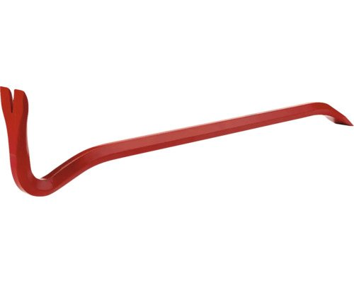
Wrecking Bar / Crowbar 750 mm (Nail Puller)Forged wrecking bar with nail puller for demolition, formwork, floorboards and skirting.

Aluminium Spirit Level 1,200 mm (Box Profile, 3 Vials)

Brick Trowel 180 mm (Steel, Wooden Handle)Brick trowel with hardened steel blade for picking up, applying and spreading mortar.

Street / Site Broom 400 mm with Wooden HandleSturdy street broom with stiff plastic bristles for cleaning building sites, access roads and yards.

Digging Spade, Steel Blade with Wooden Handle and D-GripSpade with flat rectangular steel blade for trenches, foundation edges and ground work.
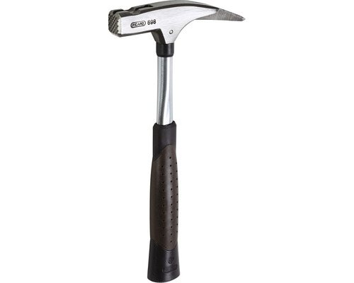
Carpenter's Claw Hammer / Roofing Hammer 600 gForged roofing hammer with milled face, claw and magnet for roof trusses, formwork and timber construction.

Concreter's Nippers (Tower Pincers) 250 mmForged concreter's nippers for cutting and tying binding wire when reinforcing and for pulling nails.

Hand Stapler / Staple Gun 4–14 mm (Metal Body, Spring-Driven)Robust hand stapler for foils, vapour barriers, insulation sheets and battens on site.

Builder's Bucket 12 L, Plastic (PE) with Metal HandleImpact-resistant 12 L bucket with litre scale and steel handle for mortar, plaster, adhesive and water on site.

Mortar Tub 65 L, PlasticImpact-resistant 65 L mortar tub with carrying handles for mixing and holding mortar, plaster and screed.

Staples type 53, galvanised, 6–14 mm (pack of 5,000 or 10,000)Galvanised fine-wire staples type 53 (crown 11.4 mm) in 6–14 mm lengths – the consumable for the hand tacker.

Mason's trowel set, 4 pcs (brick, plastering, pointing and finishing trowel, wooden handle)Four trowels in one set: brick trowel, Berne plastering trowel, Hamburg pointing trowel and finishing trowel for the complete bricklaying and plastering routine.
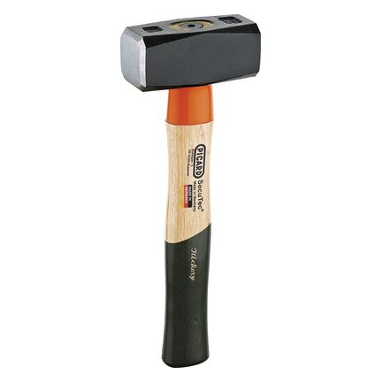
Club hammer and chisel set (club hammer about 1,000 g, flat and pointed chisel 250 mm, hand guard)Club hammer with two hand chisels and hand guard for chiselling, plaster and masonry work.
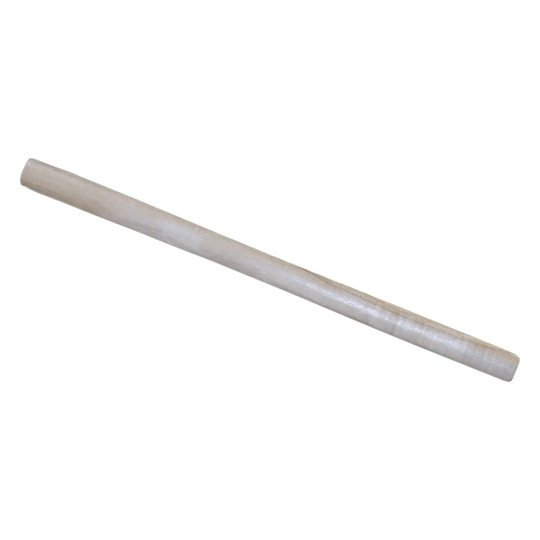
Hickory replacement handle for hammers (900 mm for sledge/splitting hammers, 360–400 mm for carpenter's/engineer's hammers), with wedgeStraight hickory handle with wedge as a spare part for sledge, splitting, carpenter's and engineer's hammers.
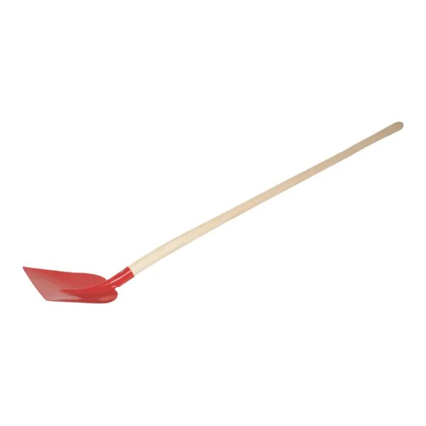
Holstein shovel 130 cm (concrete shovel)Wide steel shovel with a 130 cm wooden handle for shovelling concrete, sand, gravel and mortar.
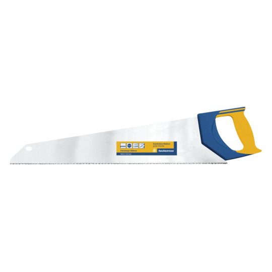
Hand saw 550 mmHand saw with a 550 mm blade, hardened pointed teeth and plastic handle for structural timber, battens and panel materials.

Screwdriver set VDE 1000 V (6 pcs)6-piece screwdriver set with 1000 V insulation (slotted, Phillips, single-pole voltage tester) for electrical installation and maintenance.
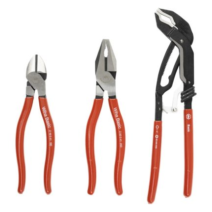
Pliers set (combination, side cutter, water-pump pliers)3-piece pliers set of combination pliers, side cutter and water-pump pliers for assembly, installation and repair.
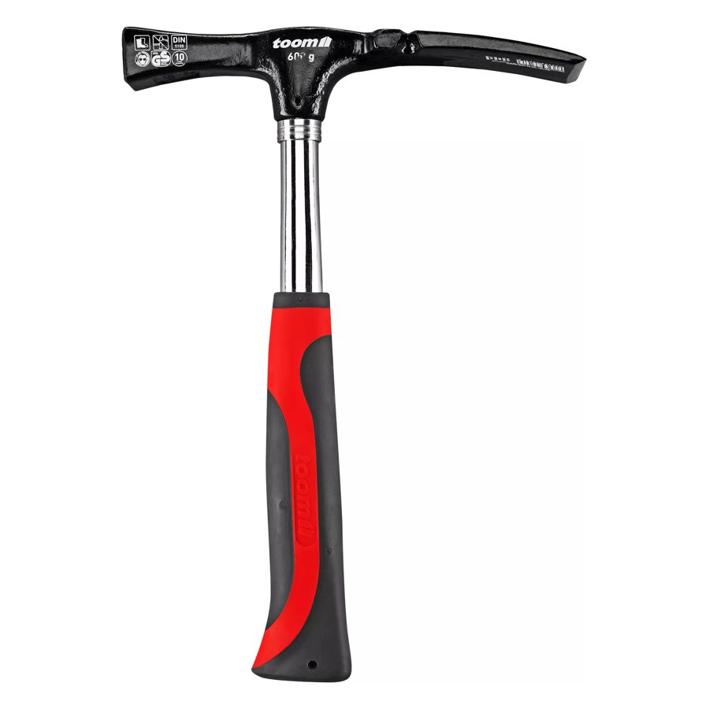
Bricklayer's hammer 600 gThe classic masonry hammer with a 600 g head: face for striking, chisel edge for splitting and fitting bricks.
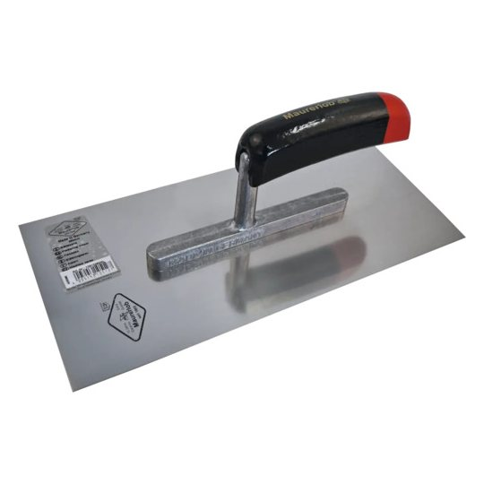
Stainless finishing trowel 280 × 130 mmSmooth (unnotched) finishing trowel of 0.7 mm stainless steel for smoothing and skimming plaster, filler and fine-plaster surfaces.

Try square / carpenter's square 300 mmRight-angle try square with a 300 mm stainless blade and fixed stock for marking, checking and aligning right angles.
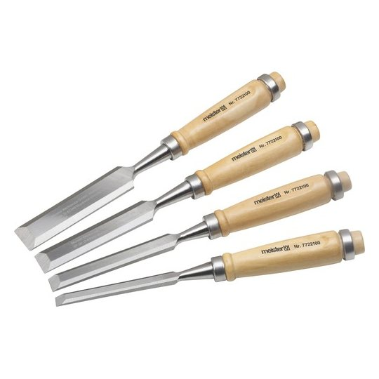
Wood chisel set (4 pcs, 6–25 mm)Four firmer chisels in 6, 12, 19 and 25 mm width of chrome-vanadium steel for mortises, slots and hardware recesses in wood.
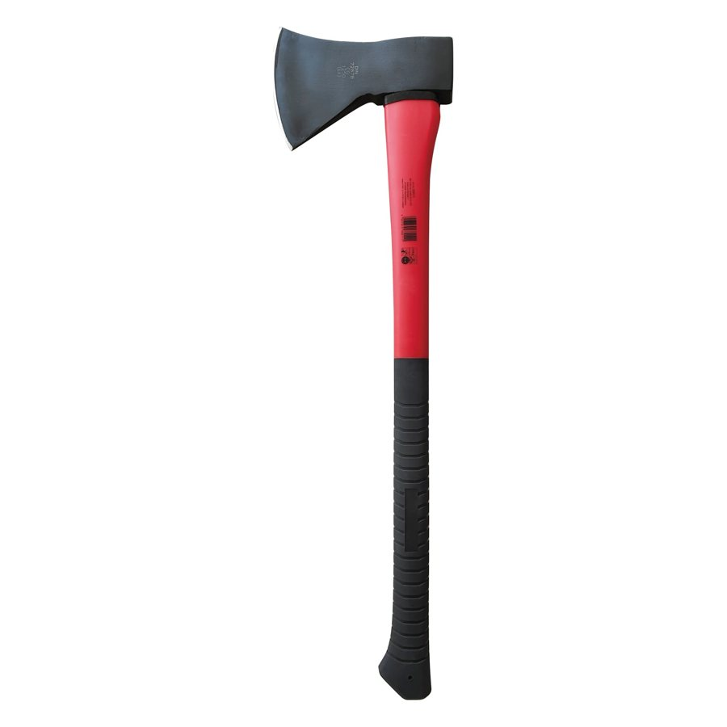
Axe 1,250 g with fibreglass handle (splitting axe, forged head, rubber grip)Forged axe with a 1,250 g head, low-vibration fibreglass handle and rubberised grip for splitting, chopping and carpentry work on site.
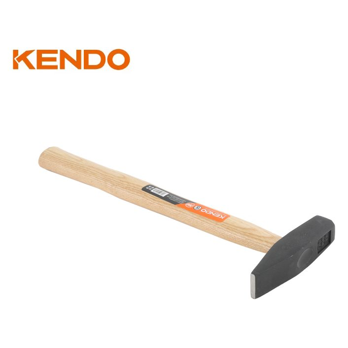
Engineer's hammer 500 g (DIN 1041 pattern) with ash handleClassic German-pattern engineer's hammer: forged steel head, polished face, ash handle.
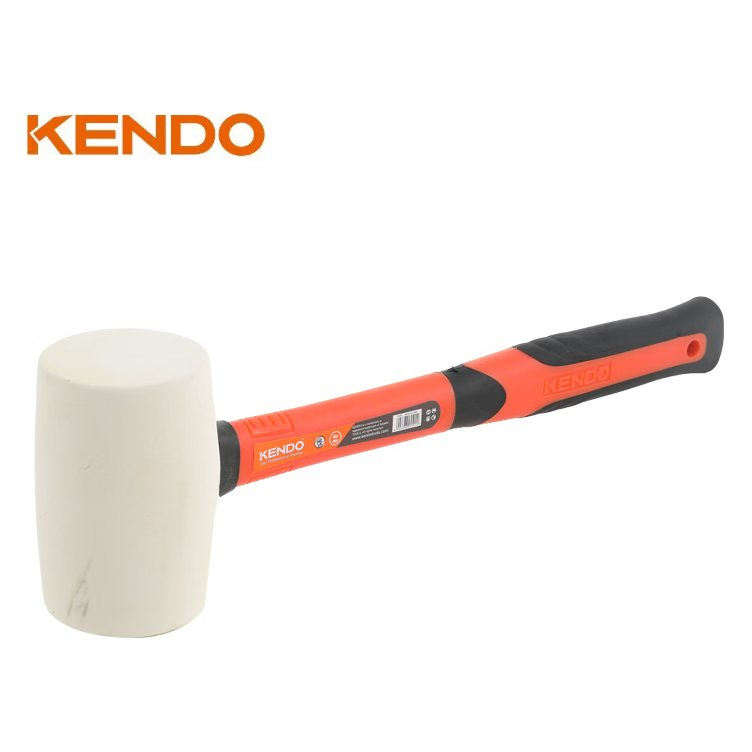
Rubber mallet / soft-face hammer, white, 16 oz (approx. 454 g)Non-marking white rubber mallet for tiles, flooring, wood and bodywork.

Double Open-End Spanner Set 8 pcs, 6–22 mm, Cr-VMetric open-end spanner set in chrome-vanadium steel.
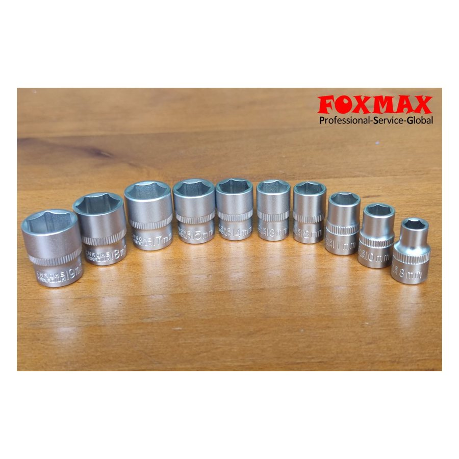
Socket Set 3/8" Drive with Ratchet, Cr-V3/8" drive socket set with reversible ratchet.

Long-Nose Pliers 160 mm, Insulated HandleLong-nose pliers 160 mm with two-component grip.

Folding Rule 2 m, Wood, 10 SectionsWooden 2 m folding rule with spring joints.

One-Handed Bar Clamp 300 mm, Quick-ReleaseOne-hand clamp with quick-release mechanism on steel rail.

Pipe Wrench 14" (350 mm), Heavy DutyAdjustable 14" pipe wrench in forged steel.

Straight-Cut Aviation Tin Snips 250 mmStraight-cut tin snips in Cr-V steel with soft grip.

Caulking Gun 310 ml, Skeleton FrameManual caulking gun for 310 ml cartridges.